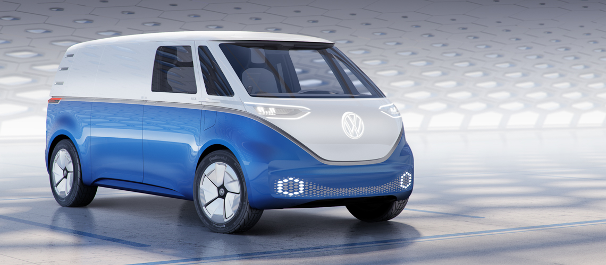

Nouvelle génération de Combi
Accueil Actus du Combi Contactez-nousSa carrosserie et ses phares arrondis ne seront plus tout à fait les mêmes. Une nouvelle version du mythique Combi Volkswagen sera mise en vente à partir de 2022,
a annoncé le constructeur allemand, samedi 19 août, dans un communiqué.
Le grand retour de ce symbole des années 1970 avait déjà été annoncé par un dirigeant de Volkswagen, mais on ignorait la date exacte de sa commercialisation.
Ce futur Combi, 100% électrique avec une capacité donnée à 111 kWh, aura des fonctionnalités proches de celles des voitures autonomes.
"Le Microbus, son surnom aux Etats-Unis, a longtemps incarné le style de vie californien. A présent,
nous préparons son retour à travers la nouvelle e-génération de véhicules Volkswagen et dans une version électrique réinventée",
a indiqué le patron de Volkswagen, Hubert Diess, dans un communiqué. Depuis le scandale du Dieselgate, la marque allemande mise de plus en plus sur l'électrique.
Une version utilitaire dans les cartons

En plus de la version classique pour les particuliers, le Combi sera commercialisé en version utilitaire zéro-émission,
"en particulier pour la livraison de colis et de marchandises au cœur des villes",
a indiqué Eckhard Scholz, patron de la division véhicules commerciaux chez Volkswagen.
Pour l'heure, peu de détails ont été révélés sur le futur Combi, qui devrait mesurer 4,94 mètres de long et 1,97 mètre de large.
Il sera commercialisé à l'international:en Europe, en Amérique du Nord, mais aussi en Asie.